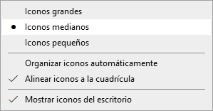

Administración de cuentas
A la hora de usar nuestro ordenador, podemos optar por usar una cuenta local o una cuenta de Microsoft.
Un ordenador con una cuenta local no permite utilizar diversos servicios de Windows como el almacenamiento de datos en la nube OneDrive, Cortana, sincronizar la configuración de preferencias en más de un dispositivo, etcétera. Para poder hacer uso de esos servicios tenemos que iniciar sesión en ellos con una cuenta de Microsoft.
Para configurar una cuenta local, debemos hacer clic en Inicio >Configuración > Cuentas y luego pulsar en el icono Cuentas. Podemos elegir entre usar una contraseña, un pin (4 dígitos) o incluso una contraseña de imagen para iniciar sesión.
Por otro lado, para usar una cuenta de Microsoft, en vez de una local, hemos de hacer clic en Iniciar sesión con una cuenta de Microsoft en su lugar, dentro de la ventana de configuración de cuentas.
Aquí introduciremos nuestra cuenta de Microsoft, o bien, crearemos una nueva.
En cualquier momento es posible volver a una cuenta local, cerrando este inicio de sesión con la opción Iniciar sesión con una cuenta local en su lugar.
Otra opción disponible es una opción llamada Administrar mi cuenta de Microsoft, que nos lleva a una página web en donde podremos configurar cuestiones importantes como privacidad, seguridad, saber en qué dispositivos he iniciado sesión, etc.
En la misma ventana Configuración > Cuentas, en el panel de la izquierda tenemos la opción Familia y otros usuarios, que nos permite añadir a otras personas para que usen nuestro ordenador sin que se mezclen datos de archivo y de configuración. Dichos usuarios nuevos podrán usar el equipo con una cuenta local o con su propia cuenta Microsoft. Para crear un usuario nuevo con cuenta local, cuando pida el correo electrónico, pincha en No tengo los datos de inicio de sesión de esta persona y en la siguiente pantalla Agregar un usuario sin cuenta Microsoft.

Hay dos tipos de usuarios: estándar o administradores. Estos últimos pueden instalar programas y realizar cambios en la configuración del equipo, mientras que a los usuarios estándar no les está permitido realizar ese tipo de acciones. Haciendo clic sobre una cuenta, podemos cambiar el tipo de cuenta o quitar dicha cuenta:
Por último, en lo relativo a la forma de iniciar sesión en el equipo, está Hello, que consiste en iniciar sesión a partir de datos biométricos, solo disponible en aquello equipos que sean compatibles con dicha característica.
Personalización del escritorio
Para personalizar la forma de ver los iconos, hacemos clic sobre el Escritorio con el botón derecho del ratón y luego en el menú Ver.

Podemos elegir entre Iconos grandes, Iconos medianos o Iconos pequeños.
Otras opciones son:
- Organizar iconos automáticamente: los alinea unos debajo de otros. Si está marcada esta opción, no nos permite situar los iconos donde queramos.
- Alinear a la cuadrícula: podemos colocarlos donde queramos, pero estarán automáticamente alineados.
- Mostrar iconos del escritorio: esconde los iconos, no los elimina.
También podemos personalizar qué iconos del sistema aparecen en el escritorio. Por ejemplo, si no queremos que se muestre el icono de la Papelera de Reciclaje, iremos a Inicio > Configuración > Personalización > Temas > Configuración de iconos de escritorio y desmarcaremos la opción correspondiente:
Para configurar aspectos como la imagen de fondo del escritorio, las aplicaciones que aparecen en el botón Inicio, la pantalla de bloqueo, podemos hacer clic con el botón derecho sobre una parte vacía del escritorio. En el menú contextual que aparece, elegimos la opción Personalizar.

Por último, para despejar el escritorio de ventanas abiertas, pulsaremos Windows + D. Otra forma de hacerlo es haciendo clic en la línea vertical semitransparente que se encuentra a la derecha del área de notificaciones en la barra de tareas. Conviene recalcar que las ventanas no se cierran, solo se minimizan para poder ver el escritorio.
Configuración del sistema
Hay diferentes manera de acceder a la ventana de Configuración de Windows. Una de ellas es pulsando las teclas Windows + I. Otra forma es haciendo clic en el menú Inicio:
En la ventana de Configuración encontramos diferentes iconos, cada uno permite acceder a la configuración de los diferentes parámetros relativos a una parte concreta del sistema.
En versiones anteriores de Windows, la configuración del sistema se realizaba a través de El Panel de Control. Este se mantiene en Windows 10 y podemos acceder al él escribiendo "panel de control" en el cuadro de búsqueda de la barra de tareas.
Desinstalar un programa
Haciendo clic en Configuración > Aplicaciones y luego en el panel de la izquierda Aplicaciones y características. Nos aparecerá una lista de todas las aplicaciones que tenemos instaladas en nuestro equipo. Al pulsar sobre una aplicación, se nos muestra el botón Desinstalar.
Algunos programas permiten que sean reparados. Hay que seleccionar la aplicación y luego Opciones avanzadas que se encuentra debajo del nombre de la aplicación (algunas aplicaciones no tienen esta opción). En la página que se abre, hay que pulsar en Reparar si está disponible. Si no está disponible o no soluciona el problema, podemos usar el botón Restablecer.
Sincronización
Windows sincroniza con todos los dispositivos en los que hayamos iniciado sesión de forma predeterminada. Es posible desactivar la sincronización yendo a Configuración > Cuentas > Sincronizar su configuración.
Aquí vamos a poder desactivar la sincronización de todas las configuraciones o podemos ir haciéndolo de manera individualizada seleccionando solo aquellas que queramos.
Aplicaciones predeterminadas
Windows tiene registrado qué programa hay que abrir para cada tipo de archivo. Esto lo podemos ver y configurar haciendo clic en Inicio > Configuración > Aplicaciones > Aplicaciones predeterminadas. Al hacer clic en la aplicación actual, veremos una lista de alternativas entre las que podemos elegir nuestra aplicación favorita.